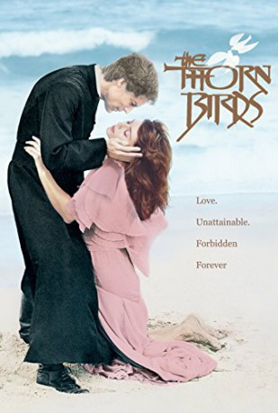

")
Alternativ: The Thorn Birds
Auszeichnungen: 4 GoldenGlobes gewonnen
 
 IMDB-Wertung: 8.0 / 10
IMDB-Wertung: 8.0 / 10  Metascore:
Metascore: 
Pater Ralph de Bricassart wird von der Kirche wegen Ungehorsams nach Australien strafversetzt.Dort begegnet er der wohlhabenden Mary Carson, die direkt von dem attraktiven Geistlichen eingenommen ist. Die Nichte von Mary Carson, die junge Meggie, hegt seit Kindertagen eine große Zuneigung zu Pater Ralph, der mit ihrer Familie eng verbunden ist.Mary Carson ist eifersüchtig, denn sie empfindet sehr viel für ihn. Wenn sie ihn nicht haben kann, soll keine ihn bekommen. Sie setzt ihn als Alleinerben ein und ermöglicht ihm so einen Aufstieg in der katholischen Kirche.Doch Pater Ralph kann sich Meggie nicht entziehen, die zu einer schönen Frau herangewachsen ist.Während er immer hin- und hergerissen ist zwischen seiner Liebe zu Meggie und dem Gehorsam gegenüber Gott, macht Ralph im Vatikan Karriere. Meggie tröstet sich in der Zwischenzeit mit dem draufgängerischen Luke O'Neill. Nach der Scheidung findet sie Trost bei Pater Ralph.Ihre tragische Liebe stürzt nicht nur das Paar in Verzweiflung, sie führt auch zu schicksalhaften Konsequenzen für Meggies Familie.
Jahr: 1983
Dauer: 137 Minuten
FSK: 12
Land: USA Studio: ABCTonspuren:
Untertitel:
Auflösung: 720p (960x716) Größe: 4372 MB
Regisseur: Daryl Duke
Drehbuch: Filmlance International AB
Soundtrack:
Darsteller:
 Richard Chamberlain als Ralph de Bricassart 4 episodes, 1983
Richard Chamberlain als Ralph de Bricassart 4 episodes, 1983 Christopher Plummer als Archbishop Vittorio Contini-Verchese 4 episodes, 1983
Christopher Plummer als Archbishop Vittorio Contini-Verchese 4 episodes, 1983 Brett Cullen als Bob Cleary 4 episodes, 1983
Brett Cullen als Bob Cleary 4 episodes, 1983 John de Lancie als Alastair MacQueen 4 episodes, 1983
John de Lancie als Alastair MacQueen 4 episodes, 1983 Jean Simmons als Fiona 'Fee' Cleary 3 episodes, 1983
Jean Simmons als Fiona 'Fee' Cleary 3 episodes, 1983 Piper Laurie als Anne Mueller 3 episodes, 1983
Piper Laurie als Anne Mueller 3 episodes, 1983 Allyn Ann McLerie als Mrs. Smith 3 episodes, 1983
Allyn Ann McLerie als Mrs. Smith 3 episodes, 1983 Ken Howard als Rainer Hartheim 2 episodes, 1983
Ken Howard als Rainer Hartheim 2 episodes, 1983 Mare Winningham als Justine O'Neill 2 episodes, 1983
Mare Winningham als Justine O'Neill 2 episodes, 1983 Meg Wyllie als Annie 1 episode, 1983
Meg Wyllie als Annie 1 episode, 1983 Rance Howard als Doc Wilson 1 episode, 1983
Rance Howard als Doc Wilson 1 episode, 1983Datei: X:\HD-Serien\Dornenvögel\Die Dornenvögel 1.mkv seit 09.01.2018
Festplatte: HD Serien(A-H)
 Es gibt insgesamt 182 Filme in der Gruppe 'HD-Serien'
Es gibt insgesamt 182 Filme in der Gruppe 'HD-Serien'